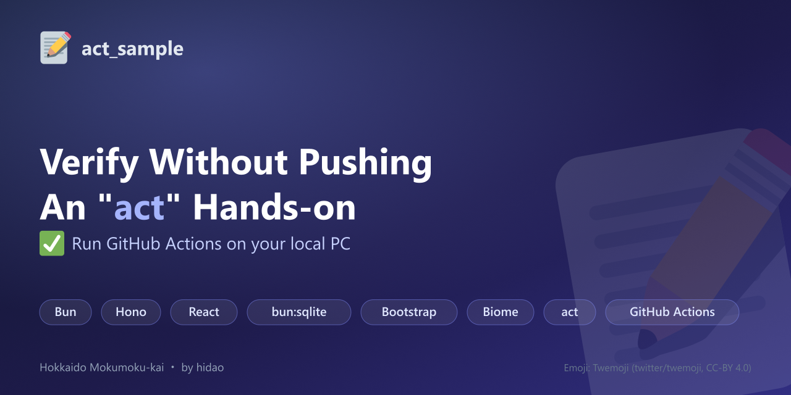

Verify Without Pushing: An "act" Hands-on
Running GitHub Actions on your local PC — Hokkaido Mokumoku-kai (2026-09-05)
What is this?
act
lets you
verify GitHub Actions workflows in a local Docker container without pushing.
This repository is a complete hands-on kit built around a minimal TODO app
made with bun + Hono + React + bun:sqlite, walking through everything from
setting up act to running it, including common pitfalls along the way.
Bun
Hono
React
bun:sqlite
Bootstrap
Biome
act
GitHub Actions
Motivation
Right after setting up CI, I kept running into the friction of having to push and wait for GitHub Actions to finish every time I tweaked a workflow YAML file even slightly. I wanted a hands-on that participants at the Mokumoku-kai could follow along with too — not a made-up sample, but a workflow we actually run in production — so I put together both an article and a slide deck.
Hands-on Flow
.actrc